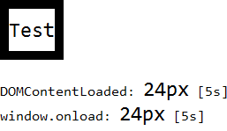
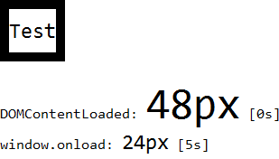

无。
在 Chrome Safari Opera 中，外部 CSS 文件并不会影响文档树的生成。在 IE Firefox 中，文档树会在外部 CSS 文件加载完毕之后创建完毕。
若页面中有加载较慢的 CSS 外部文件，且在 window.onload 事件之前以及文档数建立完毕之后这段时间内获取某些在 CSS 文件中被设定了样式的元素的 CSS 特性值，在不同浏览器中可能产生差异。
| Chrome Safari Opera |
|---|
CSS2.1 规范，一旦用户端解析了一个文档并且创建了文档树 (document tree)，它必须为文档树中的每一个元素指定其每一个 CSS 特性。更多信息参见：CSS2.1 规范 6.1 Specified, computed, and actual values 中的内容。
W3C 的规范中并没有明确说明具体何时文档树创建完毕，换句话说，没有提及文档树建立完成的标志，CSS 等外部文件的加载会不会影响到文档树的建立完毕时刻。
为了达到延迟 CSS 文件下载的效果，这里通过 PHP 在服务端将代码阻塞 5 秒。
分析以下代码：cssjs.htm
<!DOCTYPE html>
<script>
var t1 = new Date().getTime();
</script>
<html>
<head>
<style>
body { font-family:Consolas; }
#test { font-size:48px; }
</style>
<link id="css" href="css.php" rel="stylesheet" type="text/css" />
</head>
<body>
<div id="test" style="line-height:2; border:10px solid black; float:left;">Test</div>
<div id="info" style="clear:left;"></div>
</body>
<script>
function $(id) { return document.getElementById(id); }
if (!window.getComputedStyle) {
window.getComputedStyle = function($target){
return $target.currentStyle;
};
}
window.onload=function () {
var t3 = new Date().getTime();
var c = getComputedStyle($("test"), null).fontSize;
$("info").innerHTML += '<br />window.onload: <span style="font-size:' + c + '">' + c + '</span> [' + parseInt((t3 - t1) / 1000) + 's]';
}
var t2 = new Date().getTime();
var c = getComputedStyle($("test"), null).fontSize;
$("info").innerHTML += '<br />DOMContentLoaded: <span style="font-size:' + c + '">' + c + '</span> [' + parseInt((t2 - t1) / 1000) + 's]';
</script>
</html>
服务端代码：css.php
<?php
header('Content-Type:text/css; charset="gb2312"');
sleep(5);
echo "* { margin:0px; padding:0px; }";
echo "#test { font-size:24px; }";
?>
上面页面 cssjs.htm 通过 LINK 元素加载了一个外部 CSS 文件 css.php，此文件中的 #test 的 'font-size' 特性值为 48px，CSS 文件会被阻塞 5 秒，分别在文档树建立完毕时以及 window.onload 事件中检测 #test 的 'font-size' 特性的计算值，以及粗略计算从页面加载至这两个时刻所花费的时间。
各浏览器中执行效果如下：
| IE6 IE7 IE8 Firefox | Chrome Safari Opera |
|---|---|
|  |  |
可见，在 Chrome Safari Opera 中，被阻塞的 CSS 外部文件并不会影响页面文档树的生成。文档树在 CSS 外部文件加载完毕之前就创建完毕。
而在 IE Firefox 中，文档树会等待 CSS 外部文件加载完毕之后才真正的创建完毕。
在 window.onload 事件触发后，所有浏览器均可以得到在 CSS 外部文件中定义的样式信息。
在文档树加载完成时，获得元素的实际计算后样式并不一定正确，建议获得或处理元素计算后样式的代码应写在 window.onload 事件中。
| 操作系统版本: | Windows 7 Ultimate build 7600 |
|---|---|
| 浏览器版本: | IE6 IE7 IE8 Firefox 3.6.9 Chrome 7.0.517.0 dev Safari 5.0.1 Opera 10.62 |
| 测试页面: | cssjs.htm |
| 本文更新时间: | 2010-09-13 |
css js external file load 加载 document tree 文档树